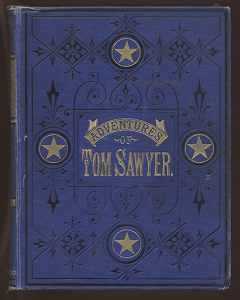

by Mark Twain · read by LibriVox volunteers
🍎 iPhone & iPad
Open this page in Safari, tap the Share button
(the square with an up-arrow), then choose “Add to Home Screen.”
🤖 Android
Open this page in Chrome, tap the ⋮ menu (top-right),
then choose “Install app” or “Add to Home screen.”